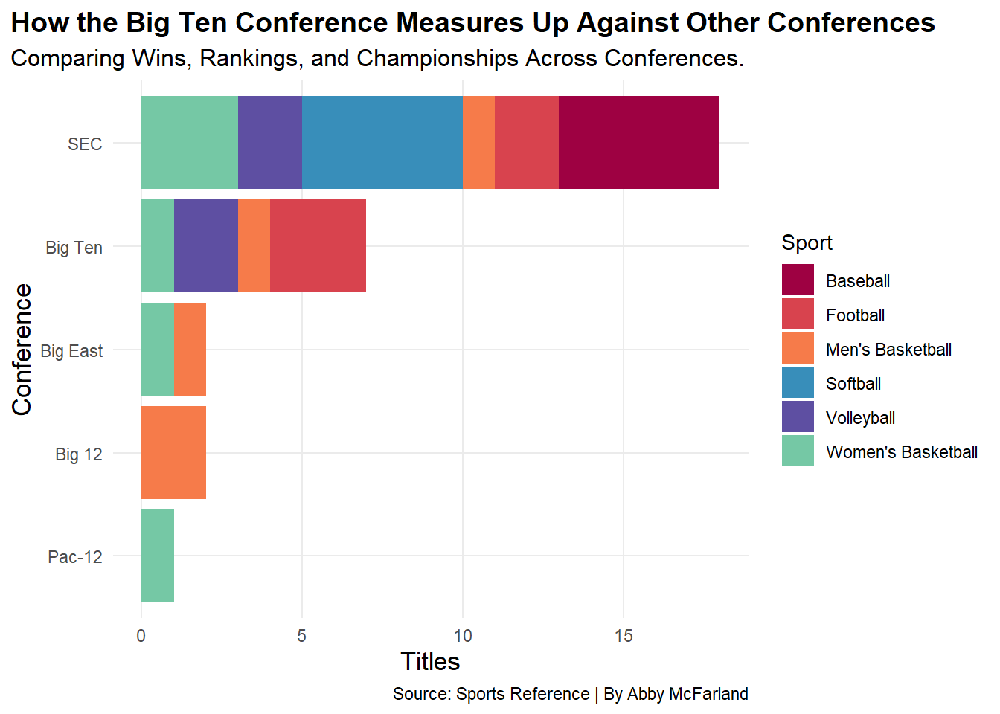
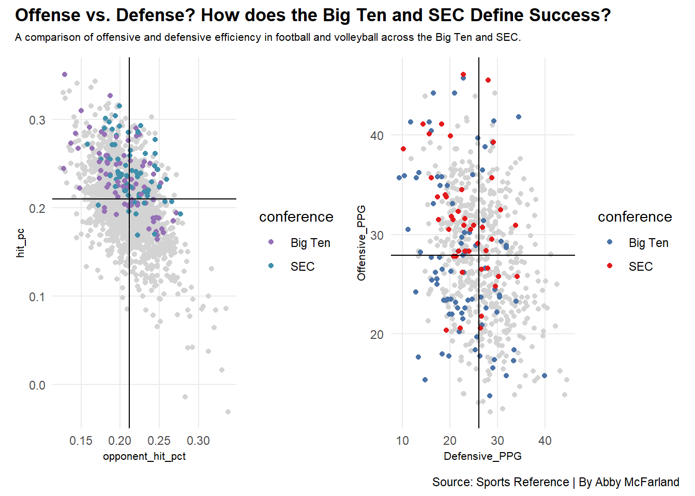

Over the last 5 years, the Big Ten Conference has been dominating national championships across multiple sports, including football and men’s and women’s basketball. With many appearances in championship games and strong overall team performances, the Big Ten has built a reputation as one of the most competitive conferences in college.
The Southern Conference (SEC) has dominated championships across a wide range of sports, establishing itself as one of the most successful conferences in college athletics. This success has set the standard for excellence and shapes the conference’s dominance in college sports.
In this project, we are going to compare the Big Ten and the SEC with other major conferences, analyzing performance trends, national championships, and wins and losses for each conference.
Let’s take a look at some numbers.
Sports Reference’s site helps us dive deeper into each team, exploring their strengths, weaknesses, and areas for improvement.
To see how many national championships the Big Ten has won, let’s take a look at how it compares to other conferences.
Code
library(tidyverse)library(rvest)library(patchwork)library(gt)Conference <-read_csv("Conference rankings - Sheet1 (1).csv")ggplot() +geom_bar(data = Conference, aes(x=reorder(Conference, TotalTitles), weight=Titles, fill=Sport))+coord_flip() +scale_fill_manual(name ="Sport", values =c("#9E0142", "#D8434E", "#F67B4A", "#388EBA", "#5E4FA2", "#75C8A5", "#388EBA"), ) +labs(x ="Conference",y="Titles",title ="How the Big Ten Conference Measures Up Against Other Conferences", subtitle ="Comparing Wins, Rankings, and Championships Across Conferences.",caption ="Source: Sports Reference | By Abby McFarland" ) +theme_minimal() +theme(plot.title =element_text(size =14, face ="bold"),axis.title =element_text(size =13), plot.subtitle =element_text(size =12), panel.grid.minor =element_blank(),plot.title.position ="plot" )

For many years now, the SEC has been dominating other conferences in many of the sports’ national championships, as shown in this chart. The sports with the most championships are Baseball, Softball, and women’s basketball.
The Big Ten Conference shows a different pattern. In football, the Big Ten has recently recorded a high number of championships, which is surprising considering the SEC is known for being the football conference. This comparison has shifted how trends in college athletics change every year, and it questions how each of the conference structures is beginning to change.
Now, let’s dive deeper into each of the power sports for each conference.
Code
Volleyball2025 <-read_csv("ncaa_womens_volleyball_teams_2025.csv")Volleyball2024 <-read_csv("ncaa_womens_volleyball_teams_2024.csv")Volleyball2023 <-read_csv("ncaa_womens_volleyball_teams_2023.csv")Volleyball2022 <-read_csv("ncaa_womens_volleyball_teams_2022.csv")Volleyball2021 <-read_csv("ncaa_womens_volleyball_teams_2021.csv")Volleyball <-bind_rows(Volleyball2025, Volleyball2024, Volleyball2023, Volleyball2022, Volleyball2021)footballstats <-read_csv("footballstats.csv")Big2 <- Volleyball |>filter(conference =="Big Ten"| conference =="SEC")bigfootball <- footballstats |>filter(Name %in%c("Ohio State", "Nebraska", "Michigan", "Illinois", "Michigan state", "Iowa", "Indiana", "Maryland", "Minnesota", "Northwestern", "Oregon", "Penn State", "Purdue", "Rutgers", "UCLA", "USC", "Washington", "Wisconsin")) |>mutate(conference ="Big Ten")SECfootball <- footballstats |>filter(Name %in%c("Alabama", "Arkansas", "Auburn", "Florida", "Georgia", "Kentucky", "LSU", "Mississippi State", "Missouri Tigers", "Oklahoma Sooners", "Ole Miss Rebels", "South Carolina Gamecocks", "Tennessee", "Texas A&M Aggies", "Texas Longhorns", "Vanderbilt Commodores")) |>mutate(conference ="SEC")Big2football <-bind_rows(bigfootball, SECfootball)Scatterplot1 <-ggplot() +geom_point(data=Volleyball, aes(x=hit_pct, y=opponent_hit_pct), color="lightgrey") +geom_point(data=Big2, aes(x=hit_pct, y=opponent_hit_pct, color=conference)) +geom_vline(xintercept =0.2095517) +geom_hline(yintercept =0.2119138) +coord_flip() +labs(x="hit_pc", y="opponent_hit_pct" ) +scale_color_manual(values =c("Big Ten"="#9571B5", "SEC"="#408FAB")) +theme_minimal() Scatterplot2 <-ggplot() +geom_point(data=footballstats, aes(x=Offensive_PPG, y=Defensive_PPG), color="lightgrey") +geom_point(data=Big2football, aes(x=Offensive_PPG, y=Defensive_PPG, color=conference)) +geom_vline(xintercept =27.90952) +geom_hline(yintercept =26.06616) +coord_flip() +labs(x="Offensive_PPG", y="Defensive_PPG" ) +scale_color_manual(values =c("Big Ten"="#4A73A7", "SEC"="#E41A1C")) +theme_minimal() Scatterplot1 + Scatterplot2 +plot_annotation(title ="Offense vs. Defense? How does the Big Ten and SEC Define Success?",subtitle ="A comparison of offensive and defensive efficiency in football and volleyball across the Big Ten and SEC.",caption ="Source: Sports Reference | By Abby McFarland" ) &theme(plot.title =element_text(size =13, face ="bold"),axis.title =element_text(size =8), plot.subtitle =element_text(size=8), panel.grid.minor =element_blank() )

As you can see, volleyball has a higher hitting and opponent percentage than the SEC. For over 5 years, Big Ten volleyball has been known as the strongest and most competitive conference. Schools like Nebraska, Penn State, and Wisconsin are constantly ranked in the top 10 and always compete for a national championship. In 2025, an SEC team, Texas A&M, won the national championship, which had people thinking this could be the change in college Volleyball. The Big Ten has the most dominating volleyball teams and will continue to destroy other conferences.
In football, the Southern Conference has consistently outperformed the Big Ten in both offensive and defensive points allowed per game. The Big Ten teams appear in the lower part of the chart, as they allow more points on average and are ranked lower defensively compared to the SEC. Over the last 3 years, the football championships have been won by Big Ten teams. As you can see in the chart, the Big Ten Conference is moving up the chart.
While volleyball and football highlight clear differences between the SEC and the Big Ten, we’re gonna shift into looking at the differences between Men’s and Women’s basketball in each of the different conferences.
Big Ten Basketball Competes with Other Conferences
A Comparison of Win and Loss Records in Men’s and Women’s College Basketball
Conference
Gender
Wins
Losses
Average rating
Atlantic Coast Conference
Men
1273
953
10.6250
Atlantic Coast Conference
Women
1292
910
16.7825
Big Ten Conference
Men
1308
888
14.4275
Big Ten Conference
Women
1289
822
19.3675
Pac-12 Conference
Men
447
367
10.6700
Pac-12 Conference
Women
473
327
16.2250
Southeastern Conference
Men
1272
810
14.6700
Southeastern Conference
Women
1281
747
21.1375
By: Abby McFarland | Source: Sports Reference
The chart compares wins and losses across the different athletic conferences, along with their average rating. In men’s basketball, the Big Ten Conference has an average rating of 14.4275, while women’s basketball has a higher average of 19.3675. The Atlantic Coast Conference (ACC) men’s basketball shows one of the lower averages at 10.6250, closely followed by the Pac-12 Conference men’s basketball at 10.6700.
Overall, the data highlights that the Big Ten Conference performs stronger compared to other conferences. This shows the Big Ten can maintain more of a competitive balance and, overall, higher performance levels compared to other conferences. Overall, across the different sports, the data continues to grow, and it shows that the Big Ten Conference remains one of the best in all of sports.